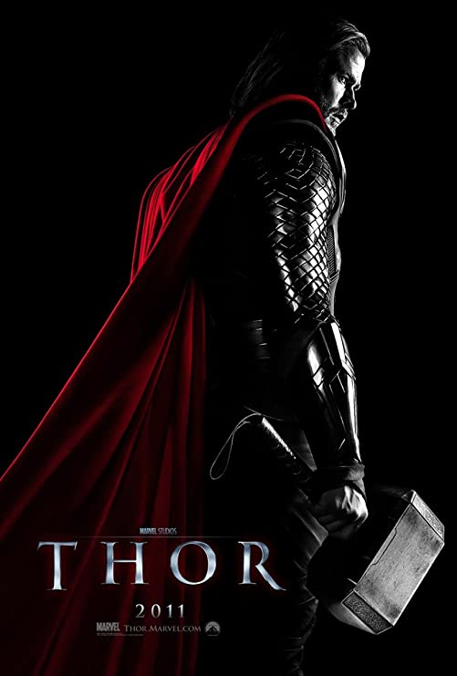

Movies
Thor
The reckless Thor, son of Odin, challenges his brother Loki's claim to the throne of Asgard. To teach him humility, Odin casts the young warrior down to Earth to live amongst humans. Robbed of his powers, Thor falls in love with scientist Jane Foster. While Loki usurps the throne of Asgard for evil gain and plans revenge, Thor's love for Jane and his lessons of humility turn him into the true hero and legendary and immortal warrior-defender of the people of the Earth, saving them from destruction.
Thor: The Dark World
There are nine realms of Asgard, and once every five thousand years, they align. Earth happens to be one of these realms. These realms create portals between the worlds during the alignment which is called "Convergence". On Earth, in London, England, Jane Foster believes she and her crew have discovered one such portal. Foster, while investigating the phenomenon, is transported to another realm and comes in contact with a substance called the Aether. Upon coming into contact with the substance, it draws Thor from Asgard back to Earth. Thor takes Jane to Asgard to be cured from the Aether. Unfortunately, in doing so, it draws more than just Jane to that world. Another being called Malekith wants to use the Aether to destroy Asgard. Devising a plan with his brother, the war criminal Loki, Thor heads to "The Dark World" to destroy the Aether and save Asgard.

Thor: Ragnarok
Four years after defeating the Dark Elves and two years after the fight in Sokovia, Thor now finds himself trapped on the other side of the universe on the wacky planet of Sakaar. Meanwhile, a new threat rises as the evil Hela, Goddess of Death takes over Asgard and plans to conquer the universe. In order to get home, Thor must compete in a gladiator match against the defending champion of the Grandmaster. Little does Thor know is that the champion is his old friend and fellow Avenger, The Incredible Hulk. Teaming with The Incredible Hulk and his deceptive brother Loki, Thor must return home to Asgard in time to stop Hela and prevent the approaching Ragnarök, the apocalyptic destruction of Asgard.

Thor: Love and Thunder